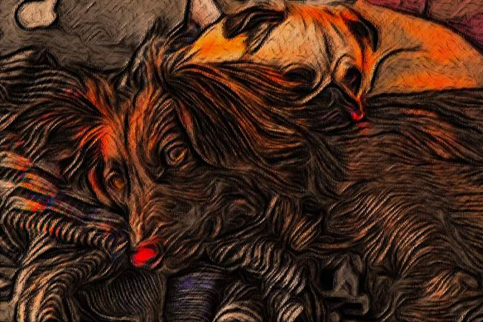
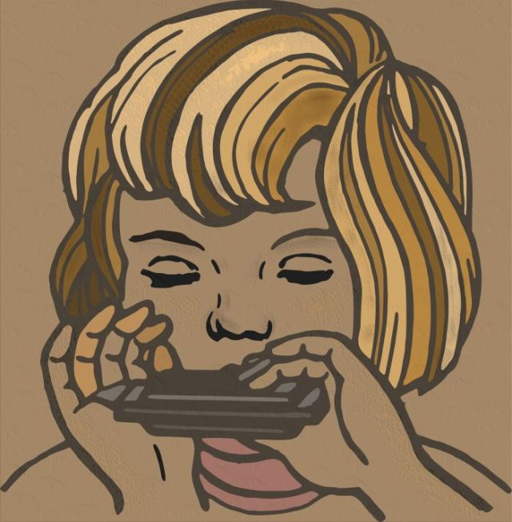
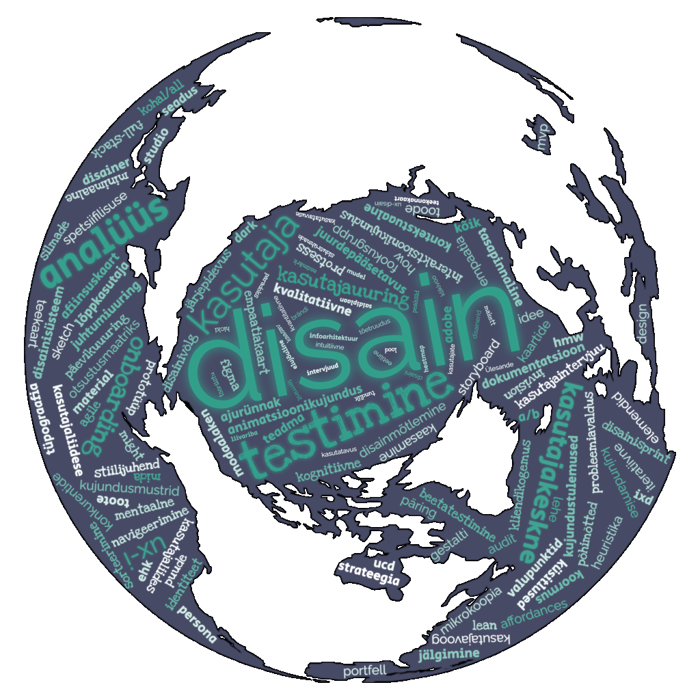
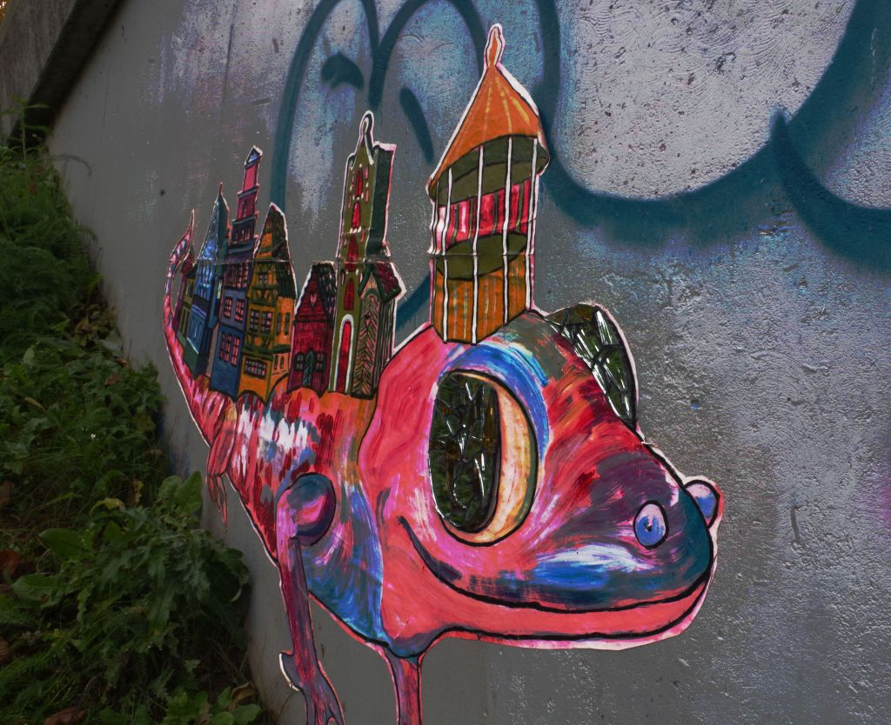
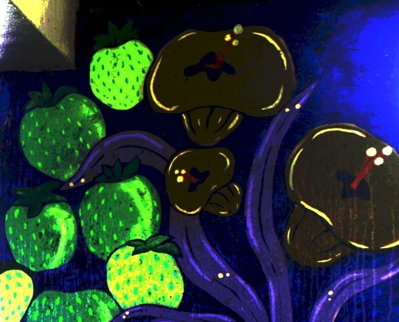
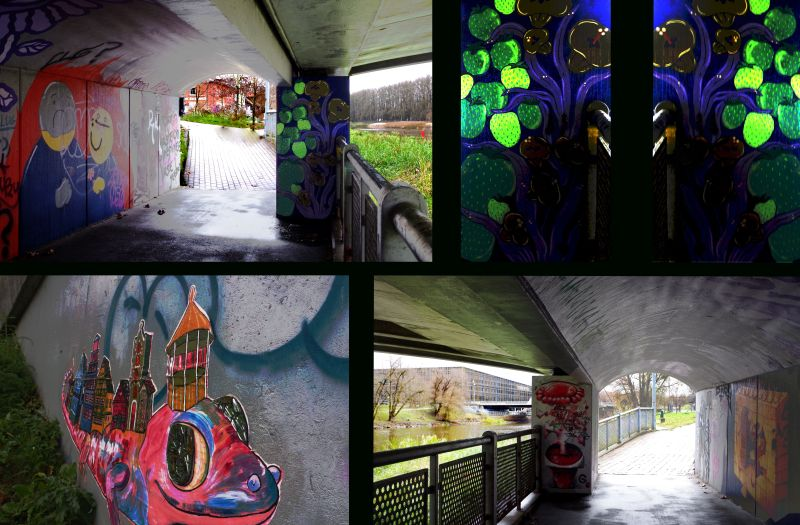

Läbitud teemad
Graafiline disain
Photoshop
Illustrator
Disaini kavandamine
Prototüüpimine
Figma
Veebigraafika
Animatsioonid
After Effects
õppimise hetked
Vaadates tagasi oma tehtud töödele, tuleb tunnistada, et
mul oli raske leida midagi, millega täielikult rahul
olla. Graafilise disaini ülesanded olid minu jaoks
keerulised, kuna mul on puudujääke kunstilises andes
ning seetõttu näevad paljud minu tööd veidi ebakindlalt
valmistatud välja. Olen pidevalt püüdnud oma oskusi
täiustada ning väljakutsetega toime tulla, kuid tunnen,
et seni on minu areng olnud alles algusjärgus.
Samas tööde tegemine Photoshopis ja After Effects'is
sobivad mulle väga hästi. Siin vajalik rohkem tehniline
lähenemine ja juba valmis oleva töö muutmine.
-
Suuremad kooliprojektid
Animeeritud jõulukaart
Kliendiks oli IKT-osakond. See on minu lemmiktöö. Tuli õppida kasutama Photoshopi video ajajoont, sh objektide ja keyframe-ide animatsioone jne. Tegin seda kaks nädalat. Väga tore oli nihutada piire ja katsetada võimalusi, mida After Effects võimaldas.
Hüpe
Cliplets. üks pool videost on tehtud liikumatuks, teine pool liigub. Tegin siin mitmeid töid, mis osaliselt ka ebaõnnestusid. Näiteks ühes töös, kus panin neiu valges kleidis mereranda kõndima, suutsin osa temast video lõpus ära kaotada.
Lumesadu
Mängisin Cliplets'i tööriistadega ja tekitasin videos päikselise päeva asemele lumesaju.
Õlimaal.
Foto ennem digitöötlust.
Õlimaal
Foto peale digitöötlust.
Digimaal
Tüdruk suupilliga.

Trükiettevalmistus
Trükiettevalmistus
3D-logo loomine
Omaloomingulise logo loomine Illustratoris.
Sõnapilv
Veebitööriista kasutades valmisid põnevad tööd. Üks näide siin.
Fotoseeria - sillas on kunst.
4-pildiline fotoseeria Tartu Kroonuaia silla alustest grafititest. Valisin pildiseeria pildistamise kohta kaua, kuni leidsin, et mind on Tartu puhul alati kõnetanud erinevad sillad, mida siin ohtralt leidub. Üle Emajõe viivaid sildu on veidi kunstilisema hingega inimesed erinevatel aegadel oma loominguga üle valanud.
Valituks osutus Kroonuaia sild, sest tema Supilinna poolsele küljele on maalitud graffitid, mis kokku moodustavad veidi müstilise ja salapärase koosluse. Mind imponeeris, et sain lisaks graffititele pildile peale ka sillaaluse enda, mis veidi oma roheka tooniga justkui ise juba maalis kauni raami.
Sõnapilv
Veebitööriista kasutades valmisid põnevad tööd. Üks näide siin.
-
-
Disaini kavandamise ja
prototüüpimise aines tegin Figmas
valmis ka mõned hi-fi prototüübid.
Toon need siinkohal välja. Aasta
Tegija võistlusel loodud Avasta
Tartut äpp mul ebaõnnestus.
Siinkohal peangi mainima seda, et
kuna mul on ATH ja füüsilise poole
pealt probleemid liigestega, ei
olnud ma väga võimeline parima
tulemuse saamisele keskenduma.
Püüdsin anda endast maksimumi, et
ülesanne üldse tehtud saaks.
- Avasta Tartut äpp. Turismiäpp, kuhu tuli luua kaks erinevat külastusteekonda - lastega perele ning teine kulutuurirajatiste kohta. Ainuke detail, millega olen rahul, on avavaates olev logo - Avasta Tartut. See sobib antud äpi disaini juurde väga kenasti. Avasta Tartut äpp
- Voco kahe kooli interaktiivne kaart. Kasutades eelnevalt Photoshopi leierite võimalusi, võttes aluseks reaalse Tartu linna kaardi, kujundasin Figmas Kopili tänava hoonest Põllu tänava hooneni jälgitava interaktiivse kaardi. Voco kahe hoone interaktiivne kaart
- Infograafik Pixel Perfect raamatu kohta. Huvitav töö. Aga nagu ma tol hetkel veel olin - viled ja tuled ja kõik värvid, mis olemas, tuli lisada. Tegelikult õpetajale meeldis ning peale mõningaid parandusi töös (joondused jms), jäi ka tema tööga rahule. Infograafik
- Kõige olulisemad ligipääsetavuse vead. Analüüsisin kolme erinevat veebilehte WAVE, Accessibility Checker ja PageSpeed Insights veebitööriistadega. Õpetaja tõi välja, et meeldivad reaalsed näited - nt "jäin haigeks" jms. Ligipääsetavuse testi ülevaade
- Disaini mustrid ja UI elemendid. Selliseid kokkuvõtteid meeldib mulle väga teha. Mulle loob see ka sellise struktureeritud ülesehituse, kus näitlikult ja selgelt on teemadest räägitud. Disaini mustrid ja UI elemendid
- Kliendile logo loomine Ligipääsetavuse testi ülevaade
-
-
Mida ma õppisin?
Õppisin peamisi veebigraafika oskuseid ja põhimõtteid läbi programmide Photoshop, Illustrator, After Effects ja Figma. Lisaks veebitööriistad mocup.com ja uizard.com.
Sain selgema pildi ette värviteooriast, kompositsioonist ja tüpograafiast.
Sain teada, millised on head ja olulisemad veebirööriistad, kuidas leida sobivaid ikoone, millised tasuta pildipangad on head kasutada ja palju muud, mida hea veebigraafiku töös vaja läheb. -
Mida veel õppisin?
Prototüüpimise oskuse arendamiseks õppisin nii koolis kui ka kooliväliselt programmi Figma.
Figmas valmisid mitmed tööd ja äpid - näiteks
e-poe ostuteekonna prototüüp Tartu linna atraktsioone tutvustava äpi prototüüp -
Lisaks sain teada
Veebigraafika ja -disaini oskused mängivad olulist rolli samuti turunduses ja müügis. Kui ma kujundan hästi mõne veebilehe või reklaami, mis on atraktiivse visuaaliga ning selge kutsega tegevusele (call-to-action), siis see aitabki suurendada konversioone ja müüki. Efektiivne disain aitab kaasata külastajaid, suunata neid olulistele tegevustele.
-
Lõppkokkuvõtteks
Ma sain teada, et väga tähtis on kasutajakeskne disain ja oskus luua head veebigraafikat. Antud aine oli mulle endale järjekordseks tõestuseks, et ära kunagi eelda, et mõni veebileht või äpp on kuidagi juhuslikult kokku pandud. Suuremal osal neist on selja taga suur meeskond, kes teeb prototüüpe, disainib, kontrollib vastavust nõuetele jne. Kõike seda nüüd teades, olen enam kui kindel, et ma sihilikult ei tee enam kunagi mitte ühtegi halba veebilehte ega äppi.